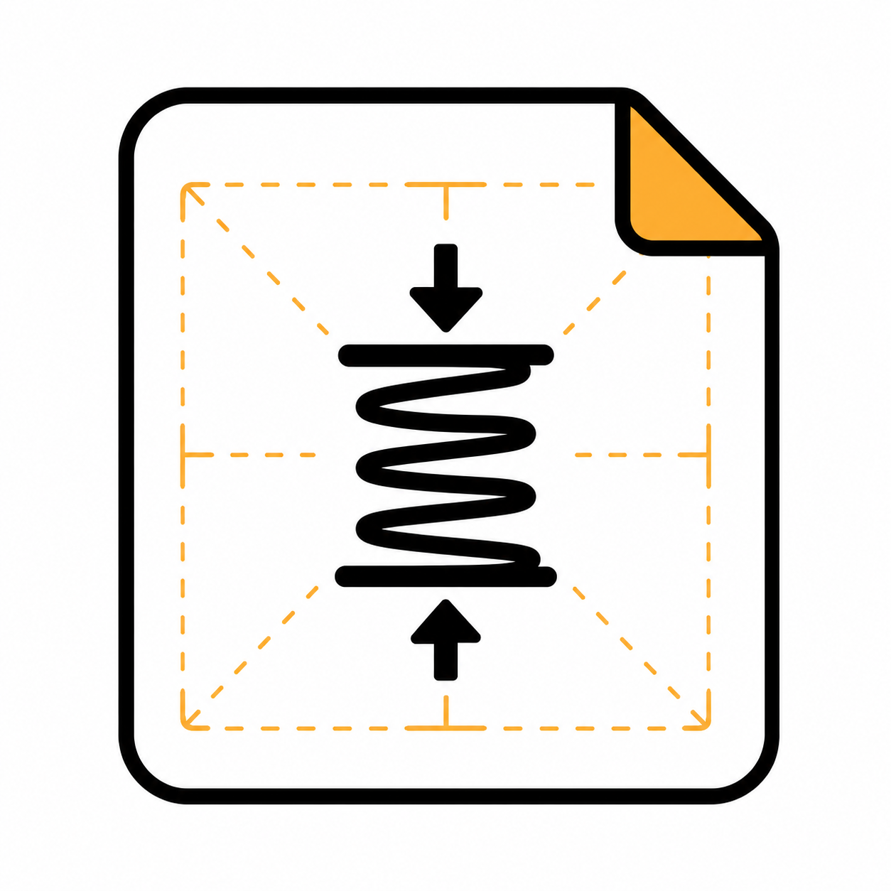

「ひらくたび」問題セット
アプリにダウンロードして読み込める動作確認用サンプルデータ一覧です。
問題ファイルを保存後、Androidアプリ「ひらくたび」内のインポートメニューから読み込んでお使いください。
※配布中の問題セットはアプリの動作確認用データです。問題内容の正確性・正当性は保証しておりません。
国語（漢字・接続語・指示語）
接続語や指示語の使い分け、漢字の読み書き練習問題セット。
理科（動植物）
身近な生き物や植物のからだの仕組みと生態に関する問題。
理科（観察・実験など）
天体観察、水溶液の性質、実験の手順と注意点に関する問題。

理科（春の生物）
春に見られる花や昆虫の成長と観察ポイントをまとめたセット。
日商簿記3級（基礎問題）
仕訳の基本、勘定科目、基本概念を身に付ける200問。
日商簿記3級（実践対策）
試験の第2問・第3問形式に合わせた総勘定元帳や試算表の対策。
特殊な読み・熟字訓
日常で出会う難読漢字や特別な訓読みのマスター200問。
特殊な読み方・難読語集
難読語や特定の分野で使われる特殊な漢字の読み問題。
小学生で習う漢字（4択問題）
小学校で学習する基本漢字の正しい読み書き選択問題200問。
大人向け・英検2級語彙
英検2級レベルの単語・熟語トレーニング問題集。
子ども向け 基礎英語
アルファベットや身近な英単語を楽しく学べる基礎セット。